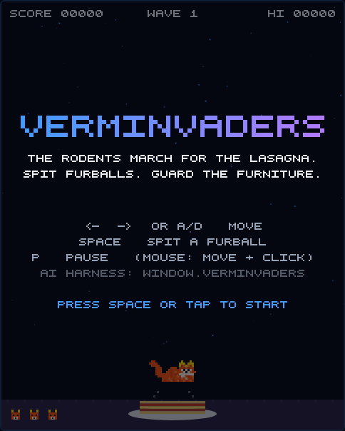
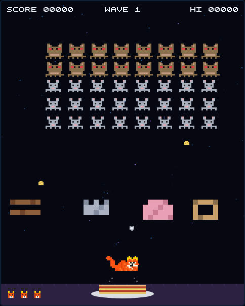

Mistral October Community Challenge
Le Chonk defends
the last lasagna on Earth
Verminvaders is a love letter to Space Invaders: a fat cat spits furballs at forty hungry rodents marching toward a lasagna. The twist - it was built to be played by an AI. A harness drives the game and Mistral's model mistral-large-4 does the strategizing, live and on screen.
scrollScreenshots
One canvas, forty rodents, one lasagna
The game itself is a single 480×600 canvas in the style of the 1978 original. When the AI harness plays, two glass panels join the stage and stream the model's thoughts and strategy in real time.



How to play
You are the cat. The lasagna is non-negotiable.
Five rows of rodents - rats on top, mice below - march side to side and descend on the walls. If any of them reaches the lasagna line, dinner is over. You have three lives and one furball in the air at a time. Good luck.
Move & shoot
Glide with ← → or A D - or tap/click where the cat should go. Space (or another tap) spits a furball. Classic rules apply: one furball in the air at a time, so make it count. The shields can be chewed through.
Dodge
Rodents drop crumbs. Three lives, two seconds of invulnerability after a hit. As fewer rodents remain, they march faster - the endgame is the killer.
Or just watch
Prefer to spectate? Run the harness and watch the AI play - its reasoning is streamed into the panels next to the stage. P pauses.
Watch it play
mistral-large-4, mid-wave, unedited
A short, real recording of the harness playing Verminvaders. The cat's reflexes come from deterministic code; every strategy call goes to mistral-large-4, which reads the situation mid-play and retunes its parameters. The cat keeps playing while the model reasons - the tuned plan applies the moment it arrives. The panels show exactly what it is thinking.
How & why it was built
A game built to be played by an AI
Verminvaders exists because of the Mistral October Community Challenge: build something that makes an LLM play a game. The answer here is an AI harness - a small program that opens the game in a real Chromium browser, reads its state, and asks Mistral's model mistral-large-4 to strategize. Neither the game nor the model knows about the other beyond a narrow, well-defined bridge.
window.verminvaders
Two brains, one cat
The fast layer plays frame by frame: dodge crumbs, aim, fire. The smart layer - the LLM - never touches the controls. It only decides how the reflexes are weighted: how greedy, how defensive, where to camp.
Plays on, keeps notes
The game never stops for the model: while mistral-large-4 reasons, the executor keeps dodging and shooting with its current settings, and the tuned plan is applied at the next tick boundary when the answer lands. A bad or late answer just keeps the current settings - it can degrade play, but never break it. (Prefer the fair-play catnap? The harness can also freeze the game around every consultation.) And between games the strategist keeps notes: what worked, where it died, which columns rain crumbs. Next game, it opens with a plan.
Why it's hard
One furball at a time versus forty rodents that fire nonstop and march faster as they thin out. The first wave alone took the AI three attempts - it usually dies in the last few seconds of a near-perfect clear.